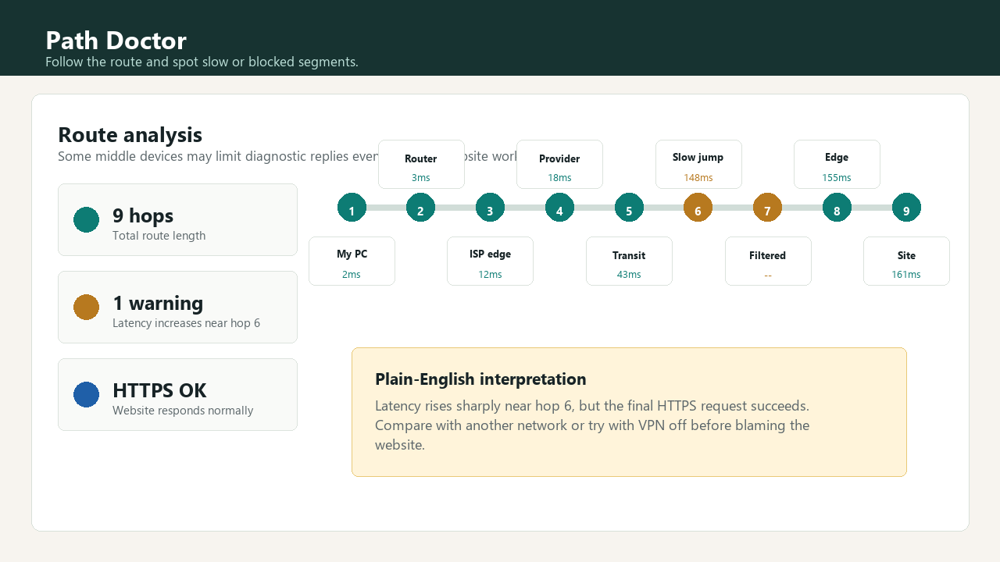

도메인 이름이 IP 주소로 바뀌는 데 걸리는 시간과 실패 여부를 확인합니다.
Windows network diagnostic tool
Path Doctor
웹사이트가 느리거나 안 열릴 때 DNS, ping, HTTP 응답, tracert 이동 경로를 한 번에 확인하고 원인 후보를 쉬운 말로 읽어주는 Windows 진단 도구입니다.
Ping은 정상인데 사이트가 느린가요?
먼저 이 경우부터 확인하기
어디서 막히는지 한 화면에서 봅니다
명령어 결과만 던져주는 도구가 아니라, DNS, 왕복 지연, 웹 응답, 경로를 함께 보고 실제로 다음에 무엇을 확인해야 하는지 정리합니다.
왕복 시간과 응답 손실을 보고 Wi-Fi, VPN, ISP, 서버 문제 가능성을 나눕니다.
브라우저에서 실제 웹 요청이 되는지, 응답 시간이 느린지 함께 봅니다.
중간 장비의 응답 제한과 실제 장애 가능성을 구분하기 쉽게 보여줍니다.
몇 초 또는 몇 분 간격으로 반복 진단하고 기록을 비교할 수 있습니다.
나중에 같은 대상의 상태 변화를 다시 볼 수 있게 최근 결과를 저장합니다.
tracert가 이상해 보여도 바로 장애는 아닐 수 있습니다
중간 hop의 별표나 응답 없음은 장비가 진단 신호에 답하지 않는 설정일 수도 있습니다. Path Doctor는 웹 응답과 ping을 함께 보고 더 현실적인 설명을 제공합니다.


검색되는 문제형 가이드
제품 이름을 모르는 사람도 실제로 검색하는 문장으로 들어올 수 있게, 흔한 네트워크 증상별 설명을 정리했습니다.
Windows에서 먼저 써보세요
설치 파일은 GitHub Releases에서 배포합니다. itch.io에서는 구매 또는 후원으로 개발을 지원할 수 있습니다.